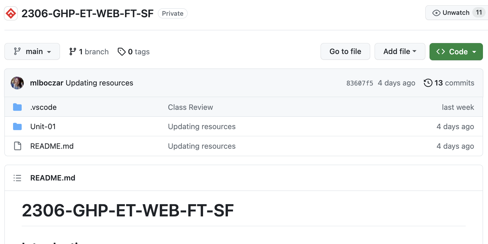

Lauren Toussaint
Lawyer & Junior Software Engineer-in-training with international leadership experience
Welcome to My Portfolio.
Below you will see a few snapshots of projects I've led. They represent steps on my path to learn more about programming languages.
- Inspiration 2019
- Foundation Website 2022
- Javascript Alert 2023
- Hand-coded Website 2023 

That's me in the middle, co-hosting with our Chinese partner, the team of data privacy attorneys and tech professionals in Beijing, PRC.

Pictured here is a website I created for the Trees & Trails Foundation, supporting preservation of local wildlife and greenspace lost to invasives like honeysuckle, which is costly and time-consuming to remove.

When I saw this alert pop up on my website, I was filled with joy watching my successful JS alert.
A screeshot of this website, crafted of code I wrote.